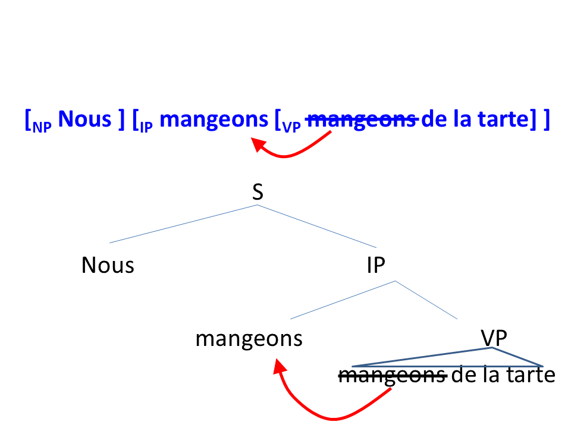

What you should have discovered from the previous tasks is that in French, main verbs work just like
auxiliary verbs. Main verbs can have an adverb right after them, main verbs can have negation right after them, and main verbs
can move to the front of a sentence. This is all different than what we saw in English.
(The following analysis is basically a summary of Pollock,
1989. You don't need to read that paper for this module, but if you are interested in learning more of the technical details
you can try.)
Recall that, for English, we explained the difference between main verbs and auxiliary verbs by assuming that
main verbs stay within the Verb Phrase (VP), whereas Auxiliary verbs are the head of the Inflectional Phrase (IP), which is
outside of the verb phrase.
The facts of French can be described by assuming that main verbs in French move out of the Verb Phrase,
and into the Inflectional Phrase. In other words, for a French sentence like Il mange de la tarte ("He eats
pie"), the main verb mange is not actually in the VP; it may have started out in the VP, but at some point it moved out
of the VP and now it's sitting at the head of IP. Since it's the head of IP and it's not inside VP anymore, adverbs and negation
can come right after it, and it can move to the beginning of the sentence if it wants, just like auxiliary verbs in IP can. You
can look back at the "The Inflectional Phrase" section of this module, with diagrams of "Verb Position 1" and "Verb Position 2",
to confirm that this is the case: the things that French main verbs can do are all the things associated with Verb Position 1.
Crucially, the claim is that this happens in all French sentences, even if you can't see it. It's "covert
movement": movement that happens in a way that it's not easy to notice. Movement we've seen such as the movement of "is" to the
front of the sentence (changing He is angry to Is he angry?) is "overt movement": it's easy for us to see,
because it changes the order of the words in the sentence. On the other hand, in French, the movement of a main verb from the
head of VP to the head of IP is covert, because it doesn't change the order of the words in the sentence; nevertheless, we have
evidence that this movement really happens, because French main verbs do things that can only happen in IP, and thus that suggests
that French main verbs have moved out of VP and into IP. See a diagram below, for Nous mangeons de la tarte ("we eat
pie"):

As you can see from this tree, mangeons ("eat") has moved out of the VP and into the position of the
head of IP. This movement is "covert", because it didn't change the word order of the sentence; mangeons is still the
second word of the sentence. Nevertheless, we can tell that it's occupying a different structural position in the sentence,
because it is now capable of doing all the things that the head of IP can do, like having negation or adverbs after it.
Thus, the different facts we've seen about English sentences and French sentences lead us to a deeper conclusion:
French main verbs raise out of the VP and into the head of IP. English verbs
stay in the VP.
Recall that, at the beginning of this module, I asked you to think about English, French, and Chinese, and to
decide which two are alike. Now we've seen an example of how English and French are different. To bring this analysis full-circle,
let's wrap up by thinking about how Chinese fits into this concept: do Chinese main verbs raise out of VP like French, or stay
in VP like English? Continue to the activities below to investigate this question.
Chinese also has main verbs and auxiliary verbs (for example, 吃 ["eat"] in 她吃排 ["She
eats pie"] is a main verb, and 會 ["will"] in 她會赢 ["She will win"] is an auxiliary verb).
We won't try the adverb test here, because adverbs in Chinese are too different from adverbs in French and English.
But the negation test and the question-formation test will both work in Chinese.
We can negate a Mandarin sentence with 不 and we can negate a Cantonese sentence with 唔. As for
questions, we don't form questions in Chinese by moving the verb, but we can form questions by using A-not-A
structure on the verb, i.e., replacing one verb (like 會) with a verb-not-verb structure
(會唔會, or 会不会). You can use this to test questions, the same way we did
for English: in English and French we asked "can this verb move to the front of the sentence", whereas in Chinese
you would instead ask "Can I replace this verb with 'verb-not-verb'?"
Test Chinese main verbs and auxiliary verbs in terms of how they can be negated, and how they can form questions.
(Thus, you should get 4 answers: where can you put a negative word relative to a main verb, where can you put a
negative word relative to an auxiliary verb, how do you turn a main verb into a question, how do you turn an
auxiliary verb into a question.) Then, based on what you find in those tests, tell me whether Chinese main verbs
raise out of VP (like in French), or stay in VP (like in English).
The details of the syntax analysis presented here may be different in different theories of syntax—as I
mentioned, the analysis I'm describing is based on a proposal from 1989, and lots of things about syntax theory
have changed since then. However, the main point about how main verbs and auxiliary verbs behave differently
remains true, and the important lesson—that, counterintuively, there is at least one way in which Chinese
and French are more similar than English and French—remains true, even if the analysis behind why that
difference exists may have changed with newer syntax theories.
The bottom line, which I hope you have learned from this module, is: it doesn't always make sense to make a blanket
statement about which two languages are "similar" and "different". A language is made up of many features (many
rules of grammar). Two languages may be very different on some features, and very similar on others. I'm sure
you can find many examples of ways in which French and English are similar, and are both very different
from Chinese. But here we have seen one example of a way that French and Chinese are actually pretty
similar, and both very different from English.
Write a reflection about this module (following the same instructions as the reflection sections for the previous
modules).
When you finish this activity, you are done with the module (assuming all your work on this and the
previous tasks has been satisfactory). You can return to the module homepage to review this
module, or return to the class homepage to select a different module or assignment to do now.